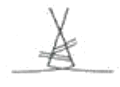
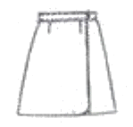

양장기능사 (2010-10-03 기출문제)
1과목: 임의 구분
1. 재봉기 작업을 시작할 때 준비사항으로 틀린 것은?
- 재봉기에 있는 기름은 충분한가를 확인한다.
- 북틀이나 톱니에 살이 감겨있지 않은가를 확인한다.
- 실, 바늘, 가위 등 필요한 것들이 제자리에 놓여져 있는가를 확인한다.
- 봉제상태가 잘 되었는가를 확인한다.
(정답률: 91%)

2. 다음 그림에서 의복제도에 필요한 부호의 의미는?

- 줄임
- 심지
- 선의 교차
- 두 선을 맞춰서 재단
(정답률: 88%)
3. 의복구성상 인체를 나누는 기준선은?
- 가슴둘레선, 허리둘레선, 진동둘레선
- 엉덩이둘레선, 가슴둘레선, 허리둘레선
- 목밑둘레선, 진동둘레선, 허리둘레선
- 진동둘레선, 가슴둘레선, 목밑둘레선
(정답률: 72%)
4. 심지를 사용하는 이유가 아닌 것은?
- 의복을 반듯하게 한다.
- 형태가 변형되지 않는다.
- 아름다운 실루엣을 부여한다.
- 빳빳한 느낌을 갖는다.
(정답률: 85%)
5. 다음 중 기본 시접이 1cm인 부위는?
- 칼라
- 어깨와 옆선
- 블라우스단
- 소매단
(정답률: 87%)
6. 기모노 소매가 매우 짧아진 형태로 길과 소매가 한 장으로 구성되는 소매는?
- 래글런 소매
- 프렌치 소매
- 드롭 숄더 소매
- 톨먼 소매
(정답률: 84%)
7. 혼방이나 교직의 옷감일 경우 다리미의 온도조절로 가장 적당한 것은?
- 열에 약한 섬유를 기준으로 하여 온도를 맞춘다.
- 열에 강한 섬유를 기준으로 하여 온도를 맞춘다.
- 온도를 중간에 맞춘다.
- 아무 쪽이나 상관없다.
(정답률: 79%)
8. 진동둘레에서 어깨 끝의 자른 분량과 같은 분량으로 내리고 진동둘레선을 다시 수정하는 체형의 보정은?
- 어깨선이 뒤로 치우친 체형의 보정
- 어깨선이 뒤로 넘어간 체형의 보정
- 솟은 어깨의 보정
- 처진 어깨의 보정
(정답률: 90%)
9. 다음 중 옷감에 주름을 잡아 오그리는 장식봉의 기법과 가장 거리가 먼 것은?
- 패거팅(fagoting)
- 셔링(shirring)
- 러플링(ruffling)
- 스모킹(smocking)
(정답률: 62%)
10. 소매원형 제도 시 소매산 높이를 정하는데 필요한 치수는?
- 진동둘레
- 팔 둘레
- 소매 길이
- 팔꿈치 길이
(정답률: 88%)
11. 시침바느질이 끝난 후 겉옷에 맞추어 속옷을 정리하고 바르게 착용한 후 관찰하는 방법으로 틀린 것은?
- 허리선, 밑단선이 수직으로 놓였는지를 확인한다.
- 옷감의 올이 바로 놓였으며 앞, 뒤, 옆의 옷 길이가 적당한가 확인한다.
- 전체적인 실루엣이 디자인에 알맞은가 확인한다.
- 가슴둘레, 허리둘레, 엉덩이둘레의 여유분이 적당한지를 확인한다.
(정답률: 75%)
12. 재봉기의 고장 원인 중 윗실이 끊어질 경우와 가장 관계가 있는 것은?
- 톱니에 결함이 있다.
- 노루발 압력에 결함이 있다.
- 실 상태에 결함이 있다.
- 북집의 부착에 결함이 있다.
(정답률: 67%)
13. 러닝 스티치로 잘게 홈질하거나 재봉기로 박아 실을 잡아당겨 잔주름을 만드는 방법은?
- 파이핑
- 스모킹
- 턱킹
- 개더
(정답률: 65%)
14. 칼라의 가장자리나 옷감과 옷감사이의 솔기선에 배색이 좋은 다른 천을 끼워 넣는 장식봉은?
- 핀 턱
- 스모킹
- 파이핑
- 바이어스
(정답률: 86%)
15. 다트 머니퓨레이션(dart manioutation)에 대한 설명 중 틀린 것은?
- 피봇팅(pivoting)법과 질개법이 있다.
- 절개법이 초보자에게 적합하다.
- 다트 위치를 이동시켜 새로운 원형을 만드는 과정이다.
- 절개법은 한 개의 고정점을 중심으로 원형을 고정시키고 다른 부분의 원하는 위치로 돌려서 이동시키는 방법이다.
(정답률: 53%)
16. 본봉 재봉기에서 주어진 땅 길이에 맞게 천을 앞으로 밀어 주는 역할을 하는 것은?
- 노루발
- 침판
- 톱니
- 실채기
(정답률: 75%)
17. 다음 중 피복제작의 일반적인 과정에서 가장 먼저 해야 하는 것은?
- 치수 설정
- 의복 설계
- 패턴 제작
- 재단
(정답률: 71%)
18. 다음 중 소매길이를 재는데 기준점이 되지 않는 것은?
- 어깨끌점
- 목뒤점
- 팔꿈치점
- 손목점
(정답률: 86%)
19. 다음 중 제품생산요인의 3가지 요소에 해당되지 않는 것은?
- 재료비
- 인건비
- 제조경비
- 일반관리비
(정답률: 89%)
20. 겉면이 파일조직으로서 방향성이 있는 냅(nap) 가공된 천의 면단이나 천의 면이 한 쪽 방향으로만 향하게 하는 면단에 적합한 연단기는?
- 턴테이블 연단기
- 자동 연단기
- 자동행거 연단기
- 적극송출 연단기
(정답률: 67%)
2과목: 임의 구분
21. 어깨슬기선의 설명으로 옳은 것은?
- 어깨끝점과 옆목점을 연결하는 선이다.
- 어깨끝점과 겨드랑이점을 연결하는 선이다.
- 양 어깨끝점을 연결하는 선이다.
- 앞목점과 옆목점을 연결하는 선이다.
(정답률: 68%)
22. 가봉 때 바느질 방법으로 가장 옳은 것은?
- 상침시침
- 온박음질
- 홈질
- 숨은상침
(정답률: 82%)
23. 접착에 필요한 조건이 온도, 압력 그리고 프레스 시간이며 옷감의 안정을 높여주기 때문에 봉제공정을 쉽게 할 수 있게 해 주 어 작업자의 능률이 향상되는 심지는?
- 부적포심지
- 접착심지
- 면심지
- 마심지
(정답률: 74%)
24. 스커트에서 가장 기본이 되는 스커트로서, 어덩이 둘레선에서 수직으로 내려오는 쉼의 스커트는?
- 플레어 스커트(flare skirt)
- 스트레이트 스커트(straight skirt)
- 고어 스커트(gored skirt)
- 플리츠 스커트(pleats skirt)
(정답률: 87%)
25. 일반적인 기성복 제작과정으로 옳은 것은?
- 그레이딩 → 공업용 옷본 제작 → 마킹 → 연단 → 재단 → 봉제
- 공업용 옷본 제작 → 그레이딩 → 마킹 → 연단 → 재단 → 봉제
- 그레이딩 → 마킹 → 연단 → 공업용 옷본 제작 → 재단 → 봉제
- 공업용 옷본 제작 → 연단 → 재단 → 그레이딩 → 마킹 → 봉제
(정답률: 77%)
26. 다음 중 안전 다림질 온도가 150℃인 섬유는?
- 면
- 아마
- 양모
- 아라미드
(정답률: 65%)
27. 다음 그림과 같은 스커트의 이름은?

- 큐롯 스커트
- 개더드 스커트
- 랩어라운드 스커트
- 티어드 스커트
(정답률: 87%)
28. 스커트에서 앞허리 밑에 가로로 군주름이 생기는 이유로 가장 옳은 것은?
- 허리 밑의 넓이가 너무 좁아서 꼭 낄 때 생긴다.
- 허리 밑의 넓이가 너무 헐렁할 때 생긴다.
- 배가 없거나 마른 체형에 생긴다.
- 배가 많이 나온 체형에 생긴다.
(정답률: 47%)
29. 가슴이 풍안하기 때문에 가슴에 당기는 주름이 생기고 뒤로 젖혀진 체형은?
- 상반신 굴신체
- 상반신 반신체
- 하반신 굴신체
- 하반신 반신체
(정답률: 80%)
30. 머즐린과 같은 얇은 모직물에 가장 적합한 실과 재봉기 바늘은?
- 연사 21D/2×3, 9호
- 연사 80rS, 9호
- 견사 21D/4×3, 11호
- 견사 80rS, 11GH
(정답률: 46%)
31. 피복의 위생적 성능에 해당되지 않는 것은?
- 함기성
- 통기성
- 드레이프성
- 대전성
(정답률: 71%)
32. 면과 폴리에스테르 혼용제품에서 면섬유를 가장 잘 용해시키는 약재는?
- 100% 아세톤
- 70% 황산
- 2.5% 수산화나트륨
- 20% 염산
(정답률: 50%)
33. 섬유가 습윤하였을 때 강도가 증가하는 섬유는?
- 비스코스 레이온
- 양모
- 면
- 아세테이트
(정답률: 68%)
34. 품질이 좋은 면섬유의 특징이 아닌 것은?
- 섬유장이 길다.
- 섬유가 굵고 강하다.
- 우윳빛의 얇은 크림색이 최상이다.
- 섬유의 광택이 우수하다.
(정답률: 41%)
35. 다음 섬유 중 단면의 모양이 삼각형인 것은?
- 견
- 면
- 양모
- 마
(정답률: 87%)
36. 합성섬유 중 원료의 축합중합 반응으로 얻어지는 것은?
- 아크릴
- 나일론
- 폴리비닐알코올
- 폴리염화비닐
(정답률: 49%)
37. 양모섬유에서 섬유간의 포합력을 나타내어 탄성과 방적성을 주는 성질은?
- 크림프
- 강도
- 색깔
- 길이
(정답률: 75%)
38. 다음 중 양모섬유의 표면에 해당되는 것은?
- 파라 내섬유
- 오르토 내섬유
- 스케일층
- 오수
(정답률: 82%)
39. 표준길이 1000m, 표준무게 1g으로 섬유의 굵기를 나타내는 것은?
- 영국식 면사번수
- 텍스
- 데니어
- 킬로텍스
(정답률: 74%)
40. 다음 중 필라멘트사의 특징에 해당되는 것은?
- 방적사에 비해 광택이 적다.
- 길이가 짧은 섬유로 만든다.
- 방적사에 비해 강력이 우수하다.
- 면사는 필라멘트사의 대표이다.
(정답률: 66%)
3과목: 임의 구분
41. 먼셀 표색계에 대한 설명으로 틀린 것은?
- 색상의 분할은 빨강, 노랑, 초록색, 파랑, 보라의 다섯가지 주요 색상을 선택하였다.
- 명도는 검정을 0, 흰색을 10으로 정하였다.
- 채도는 무채색을 0으로 하여 순색까지의 단계를 정하였다.
- 표기는 2Rne와 같이 2R은 색상, n은 백색량, 0는 검정색양으로 표기한다.
(정답률: 59%)
42. 다음 중 가장 따뜻한 느낌을 주는 옷감의 색상은?
- 주황
- 흰색
- 연두
- 파랑
(정답률: 82%)
43. 다음 중 성공적인 의상디자인을 위한 의상선의 특성이 아닌 것은?
- 재단 상의 직선은 착용 시 곡선이 될 수 있다.
- 의복선은 여러 가지 느낌을 표현한다.
- 활동적인 이미지의 의복은 선의 특성에 크게 좌우된다.
- 선은 재질이나 색과 무관하다.
(정답률: 68%)
44. 체형이 큰 사람에게 잘 어울리는 색채는?
- 높은 명도와 높은 채도
- 높은 명도와 낮은 채도
- 낮은 명도와 높은 채도
- 낮은 명도와 낮은 채도
(정답률: 63%)
45. 다음 중 디자이너가 제품을 만들 때 고려하지 않아도 되는 것은?
- 사람의 몸 치수와 생김새
- 구조나 기술
- 계절적 감각이나 재료의 특성
- 국민성이나 지방성 또는 민족성
(정답률: 59%)
46. 심장기관에 도움을 주며, 신체적 균형을 유지시켜 주고, 혈액순환을 돕고, 교감신경 계통에 영향을 주는 색은?
- 녹색
- 파랑
- 노랑
- 빨강
(정답률: 76%)
47. 뚱뚱한 체형의 사람에게 어울리는 의복의 설명으로 옳은 것은?
- 저명도 색으로 어두운 계통의 의복을 입는다.
- 엷은 색을 주색채로 사용하는 것이 좋다.
- 팽창색을 이용한다.
- 큰 무늬 옷감을 이용한다.
(정답률: 87%)
48. 주황색에 흰색을 섞으면 주황색이 어떤 변화를 주는가?
- 명도와 채도 모두 높아진다.
- 명도는 높아지고, 채도는 낮아진다.
- 명도와 채도 모두 낮아진다.
- 명도는 낮아지고, 채도는 높아진다.
(정답률: 26%)
49. 같은 크기의 정사각형 빨강과 초록색을 나란히 놓았을 때 경계 부근에서 빨강은 더욱 선명하고 깨끗하게 보이며 경계면에서 먼 쪽은 탁해 보이는 현상은?
- 명도 대비
- 채도 대비
- 면적 대비
- 연변 대비
(정답률: 53%)
50. 다음 중 세련되고 지적인 느낌을 주기 위한 의상색이 아닌 것은?
- 원색
- 한색
- 3차색
- 저채도의 색
(정답률: 59%)
51. 다음 중 급사몬 조직에 해당되는 사문선의 각도는?
- 11°
- 18.5°
- 40°
- 53°
(정답률: 47%)
52. 다음 중 방축 가공이 아닌 것은?
- 샌포라이즈 가공
- 런던 슈링크 가공
- 양모의 염소화 가공
- 듀어러블 프레스 가공
(정답률: 42%)
53. 여러 올의 실을 서로 매든가, 꼬든가 또는 엮거나 얽어서 무늬를 짠 공간이 많고 비쳐 보이는 피륙은?
- 직물
- 레이스
- 편성물
- 부직포
(정답률: 75%)
54. 피륙의 구성 방법에 의한 분류 중 실로 만들어진 피륙인 것은?
- 필름
- 편성물
- 펠트
- 부직포
(정답률: 66%)
55. 다음 중 신사복, 숙녀복 등의 심지 및 의류 부자재로 가장 많이 사용되는 것은?
- 편성물
- 축융포
- 레이스
- 부직포
(정답률: 72%)
56. 면사 또는 면직물에 광택을 증가시키기 위해 농수산화나트퓸용액으로 처리하는 가공은?
- 축융 가공
- 어서화 가공
- 캘린더 가공
- 플리스 가공
(정답률: 65%)
57. 제직이 끝난 생지의 불순물을 제거하는 공정은?
- 정련
- 발호
- 표백
- 가호
(정답률: 74%)
58. 양모직물의 주름 고정 가공에 해당되는 것은?
- 시로셋 가공
- 캘린더 가공
- 런던 슈렁크 가공
- 플리스 가공
(정답률: 25%)
59. 세탁물의 건조에 대한 설명으로 틀린 것은?
- 면, 마, 레이온 등의 섬유제품은 직사광선에서 건조해도 무방하다.
- 양모, 견 등의 섬유제품은 그늘에서 말리느 것이 좋다.
- 풍건(風乾)의 경우 세탁물의 건조속도는 기온, 상대습도, 풍속의 영향을 받는다.
- 편성물은 옷의 변형이 수비게 생기므로 처음부터 옷걸이에서 건조한다.
(정답률: 75%)
60. 다음 중 작업복에 가장 요구되는 직물의 성능은?
- 위생적 성능
- 형태안정적 성능
- 유행적 성능
- 내구적 성능
(정답률: 74%)